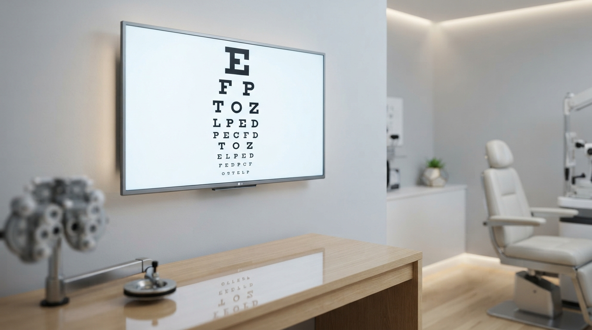

Overview
Digital Snellen Chart adalah aplikasi web mandiri (single-file HTML) yang menyediakan uji penglihatan jarak dekat dan jauh dengan tingkat akurasi klinis. Aplikasi ini mendukung empat jenis chart — Tumbling E, Landolt C, Pediatric Symbol, dan Reading Chart — dilengkapi dengan sistem kalibrasi yang mengkompensasi perbedaan perangkat seperti ukuran layar, resolusi, dan Display Scaling pada Windows.
Ringkasan
Pengembang: Wahyu Saputra (pengalaman optik sejak 2017)
Stack: HTML + CSS + JavaScript (tanpa framework)
Deployment: GitHub Pages
Target: Penggunaan pribadi, edukasi, dan uji coba kasar
Pendahuluan
Uji penglihatan menggunakan chart Snellen adalah prosedur standar dalam praktik optometri dan oftalmologi. Secara tradisional, chart cetak dipasang pada jarak tertentu dari pasien. Namun, di era digital, muncul kebutuhan untuk memiliki chart yang dapat ditampilkan pada layar — baik TV monitor maupun perangkat mobile — dengan ukuran yang tetap akurat secara klinis.
Konteks
Project ini lahir dari kebutuhan pribadi Saya sebagai praktisi optik sejak 2017, sekaligus menjadi bagian dari serial vibe coding — pendekatan pengembangan di mana AI agent membantu mewujudkan ide menjadi kode secara iteratif.
Masalah & Kebutuhan
Mengapa Membuat dari Nol?
Beberapa alasan mendasari mengapa chart Snellen digital yang sudah ada di pasaran belum memenuhi kebutuhan:
| No | Masalah | Penjelasan |
|---|---|---|
| 1 | Asal-usul tidak jelas | Banyak aplikasi chart digital yang tidak diketahui sumber kodenya, sehingga sulit memastikan akurasi dan legalitas |
| 2 | Kurangnya kalibrasi | Jarang ada aplikasi yang menyediakan mekanisme kompensasi terhadap Display Scaling Windows |
| 3 | Tidak fleksibel | Sedikit yang mendukung beberapa jenis chart sekaligus (Tumbling E, Landolt C, Pediatric, Reading) |
| 4 | Ketergantungan framework | Banyak solusi menggunakan framework berat yang tidak praktis untuk deployment sederhana |
Risiko Penggunaan
Menggunakan aplikasi dengan sumber kode yang tidak diketahui berisiko terhadap akurasi ukuran huruf yang ditampilkan — krusial dalam konteks pengukuran klinis.
Solusi yang Dirancang
Fitur Utama
Perbandingan dengan Solusi Lain
| Aspek | Chart Cetak | App Umum | Digital Snellen |
|---|---|---|---|
| Akurasi ukuran | ✅ Standar | ⚠️ Bergantung perangkat | ✅ + Kalibrasi |
| Compensasi Scaling | ❌ | ❌ | ✅ |
| Multiple chart types | ❌ | ⚠️ | ✅ 4 jenis |
| Pediatric symbols | ❌ | ⚠️ | ✅ 8 simbol SVG |
| Reading chart edukatif | ❌ | ❌ | ✅ + presbiopia info |
| Offline / no install | ✅ | ⚠️ | ✅ Single HTML file |
| Open source | ❌ | ⚠️ | ✅ GitHub Pages |
Arsitektur & Alur Kerja
Alur Render Chart
Alur Kalibrasi Display Scaling
Aspek Klinis: Rumus & Kalibrasi
Rumus Tinggi Huruf
Rumus utama yang digunakan untuk menghitung tinggi huruf dalam satuan milimeter:
height_mm = factor × (distance_m / 6.0) × 1.45444 × scaling
Di mana:
- factor = nilai yang merepresentasikan ukuran huruf (misal: 60 untuk 20/200, 7.5 untuk 20/20)
- distance_m = jarak penglihatan dalam meter
- 1.45444 = konstanta konversi sudut visual ke ukuran linear
- scaling = faktor kompensasi Display Scaling
Konversi ke Piksel
Setelah mendapatkan height_mm, konversi ke piksel menggunakan:
height_px = height_mm / (25.4 / PPI)
Di mana PPI (Pixels Per Inch) dihitung dari resolusi layar dan ukuran TV.
Mengapa Scaling Factor Diperlukan?
Standar ISO 10938
Rumus yang digunakan merujuk pada pendekatan standar ISO 10938 untuk chart penglihatan. Kalkulator internal secara otomatis mempertimbangkan scaling yang sedang aktif, sehingga pengguna tidak perlu menghitung manual.
Reading Chart & Presbiopia
Apa itu Presbiopia?
Presbiopia adalah penurunan kemampuan akomodasi mata akibat penuaan lensa. Kondisi ini dialami oleh hampir semua manusia mulai usia 40 tahun ke atas.
Fakta Klinis
- Lensa mata kehilangan kelenturan seiring waktu
- Gejala: kesulitan membaca huruf kecil, harus menjauhkan bacaan
- Bukan penyakit — bagian natural dari penuaan
- Solusi: kacamata plus, lensa bifocal, atau progressive
Konten Edukatif dalam Reading Chart
Reading chart ini tidak hanya menguji penglihatan, tetapi juga menyampaikan edukasi kepada pasien:
Mengapa Jarak 30cm?
Jarak baku reading chart diatur ke 30cm karena:
- Jarak membaca normal saat menggunakan lensa multifokal atau lensa plus adalah 30–40cm
- Pengguna dapat menyesuaikan jarak (10–80cm) sesuai kebutuhan
- Semua kalkulasi ukuran huruf otomatis menyesuaikan berdasarkan jarak yang diatur
Implementasi Teknis
Single-File Architecture
Seluruh aplikasi — HTML, CSS, dan JavaScript — dikemas dalam satu file HTML saja.
Filosofi Single-File
Meskipun awalnya tidak direncanakan, pendekatan single-file terbukti memiliki keuntungan:
- Deployment instan — cukup upload satu file ke GitHub Pages
- Tidak ada build process — langsung bisa dibuka di browser
- Portabilitas — bisa dibuka offline, dikirim via USB, atau ditanam di sistem klinik
SVG Pediatric Symbols
Delapan simbol pediatric dipilih melalui riset elaborasi menggunakan AI:
| No | Simbol | Asal SVG | Keterangan |
|---|---|---|---|
| 1 | 🍎 Apel | Lucide Icons | Path ganda (body + leaf) |
| 2 | 🏠 Rumah | Lucide Icons | Path ganda (body + chimney) |
| 3 | ⭐ Bintang | Lucide Icons | 5-point star |
| 4 | ❤️ Hati | Lucide Icons | Heart shape |
| 5 | 🌙 Bulan | Lucide Icons | Crescent moon |
| 6 | ⭕ Lingkaran | Lucide Icons | Circle |
| 7 | 🟥 Persegi | Lucide Icons | Square |
| 8 | 🔺 Segitiga | Lucide Icons | Triangle |
Pendekatan SVG
Setiap simbol menggunakan viewBox 24×24 dari referensi Lucide. Fungsi makePediatricSVG() mendukung array path (beberapa ikon memiliki path ganda) yang digabung dengan fill-rule="evenodd".
Tantangan Teknis
| Tantangan | Solusi |
|---|---|
| Ukuran kode sangat besar (single-file) | Dikelola dengan struktur section yang jelas dalam HTML |
| Akurasi antar perangkat | Sistem kalibrasi scaling + kalkulator bawaan |
| Reading chart di mobile | Responsive design khusus, scrolling body, fixed nav buttons |
| 11 paragraf edukatif panjang | Layout single-row view dengan word-wrap dan overflow handling |
| Simbol pediatric acak muncul berurutan | Predefined array per baris (bukan random) |
UX & Responsive Design
Breakpoint Strategy
Navigasi Antar Chart
UX Navigation
Tombol navigasi ditempatkan di pojok kanan atas dengan posisi fixed, disembunyikan saat mode fullscreen untuk tidak mengganggu fokus pengguna saat uji penglihatan.
Mobile-First Considerations
- Reading chart memang dirancang untuk dibaca jarak dekat — mobile adalah platform utama, bukan TV lebar
- Tombol prev/next menggunakan
position: fixedagar tetap terlihat saat scrolling konten panjang - Tooltip info diizinkan wrap di mobile agar tidak keluar layar
- Statusbar menggunakan
position: sticky; bottom: 0agar selalu terlihat
Kesimpulan
Digital Snellen Chart berhasil dibangun sebagai aplikasi web mandiri yang:
- ✅ Menyediakan empat jenis chart penglihatan dalam satu platform
- ✅ Memiliki sistem kalibrasi yang mengkompensasi Display Scaling
- ✅ Mendukung pediatric symbols dengan 8 ikon SVG yang konsisten
- ✅ Menyertakan reading chart edukatif dengan informasi presbiopia dan lensa
- ✅ Berjalan offline sebagai single-file HTML tanpa dependensi
- ✅ Responsive untuk desktop, tablet, dan mobile
Status Saat Ini
Project ini masih dalam tahap uji coba pribadi dan belum divalidasi secara klinis. Rencana ke depan adalah mengunggah ke GitHub Pages sebagai open source agar dapat dimanfaatkan lebih luas.
Referensi
- ISO 10938:2017 — Charts for the assessment of visual acuity for distant vision
- Lucide Icons — https://lucide.dev
- Plus Jakarta Sans — Google Fonts
- Courier Prime — Google Fonts